Target Audience & User Persona
Developed detailed User Personas to clearly define target users, ensuring the platform's features and overall experience align directly with real user behaviors and needs.
I am glad you came to see my Portfolio.
Hi, I'm Papawin Namchue (Tonoak), a Product Designer passionate about crafting web, app, and game interfaces. Currently studying Multimedia Technology and Animation at Mae Fah Luang University, I create digital experiences using Figma backed by front-end foundations in HTML, CSS, and JavaScript.
ROLE: Product Designer
Designed a versatile, gamified educational web platform that empowers educators, creators, and institutions to upload their own content and transform traditional lessons into interactive learning experiences.
Traditional online learning often suffers from low engagement and passive consumption, while course creators struggle to make their content exciting. Learninghaus solves this by providing a centralized hub where creators can easily integrate gamified elements such as scenario-based challenges, instant feedback, and progression levels into their curriculum, making complex topics accessible and engaging for learners.
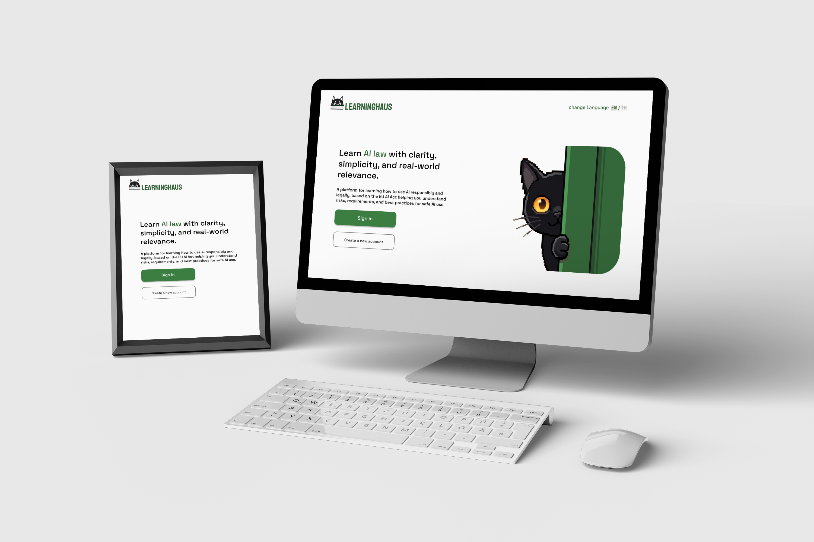
Conducted quantitative UX research (n=33) to validate the platform’s core concept. The gamified approach was highly successful, with 87.9% of surveyed users confirming that the interactive format significantly improved their motivation and ability to understand complex topics compared to standard learning methods.
Led the end-to-end product design lifecycle. Defined core concepts and user personas, mapped out complex user flows for both "Learners" and "Content Creators," and designed high-fidelity prototypes in Figma. Currently bridging design and development by overseeing the front-end and back-end implementation.
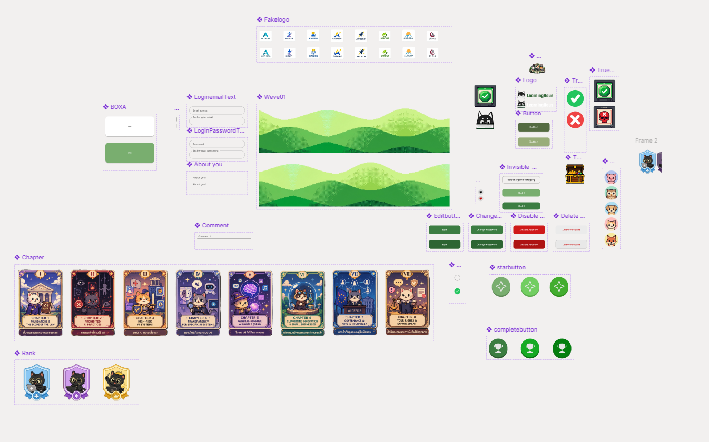
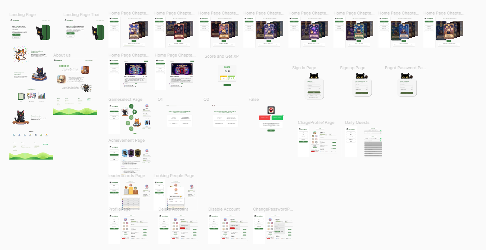
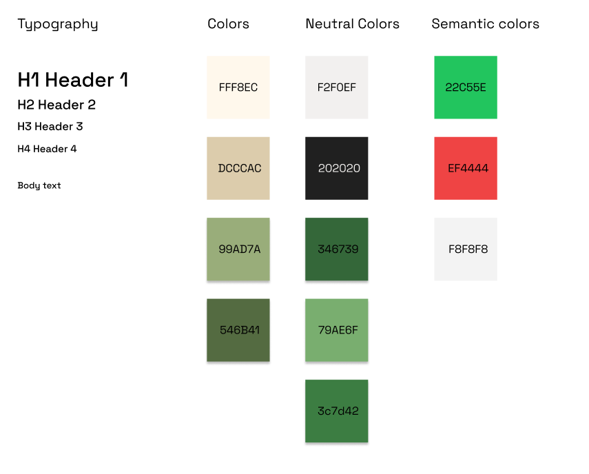
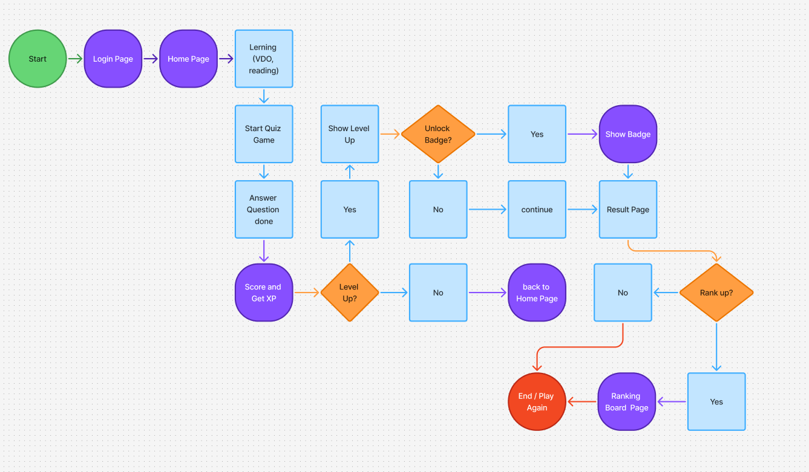
Developed detailed User Personas to clearly define target users, ensuring the platform's features and overall experience align directly with real user behaviors and needs.
Mapped out comprehensive user flows to strategically plan the project's structure. This involved defining entry points, decision pathways, and outcomes to build a logical and seamless user journey.
Established a scalable Style Guide (including Typography, Colors, and UI Components) and created both Low-fidelity (Lo-fi) and High-fidelity (Hi-fi) prototypes. This approach maintained visual consistency and significantly streamlined the design and development workflow.
ROLE: UX/UI Designer
MFYOU is an all-in-one campus application designed for Mae Fah Luang University. It streamlines communication between students, professors, and various university departments while integrating essential campus services like disaster monitoring and student job opportunities into a single platform.
Students frequently experienced significant friction when trying to reach professors, often relying on cumbersome and slow email workflows. Furthermore, contacting internal departments, discovering campus activities, and finding student job opportunities required navigating multiple fragmented online pages and disconnected channels, resulting in a frustrating user experience.
We conceptualized a unified digital hub that replaces traditional emails with a direct, real-time communication system. MFYOU allows users to instantly check the online status of professors and departments, enabling quick and seamless contact. By centralizing academic communication, job listings, medical consultations, and disaster alerts, the app delivers a highly efficient campus experience.
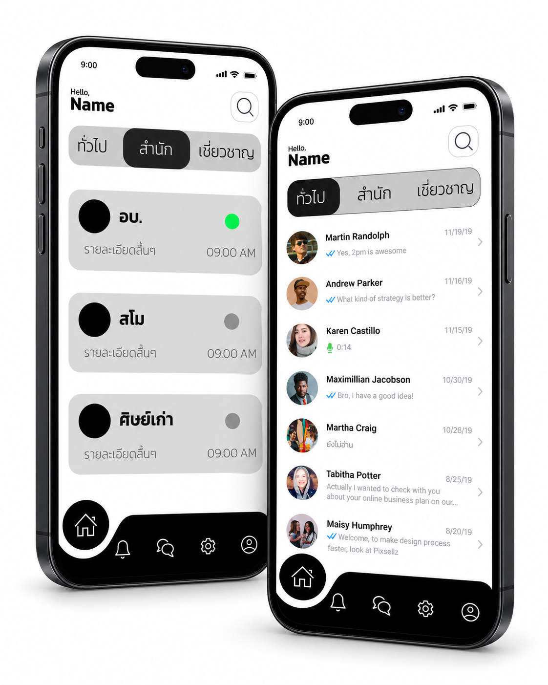
ROLE: UX/UI Designer
Gem Tracking is a smart campus transit application designed to monitor the status and routes of GEM (Global Electric Motorcars) vehicles at Mae Fah Luang University. The platform provides students with reliable schedules, live location tracking, and smart navigation features to improve their daily commutes.
Students frequently struggled with the unpredictability of campus travel due to a lack of accessible GEM vehicle schedules. Without the ability to track vehicle locations in real-time, they faced uncertain wait times and had difficulty planning their routes across the university efficiently. We designed an interactive prototype that empowers students with real-time transit data. By displaying live GEM car locations and comparing estimated travel times between walking and taking a vehicle, the app effectively streamlines campus navigation, reduces wait anxiety, and improves the overall student commuting experience.
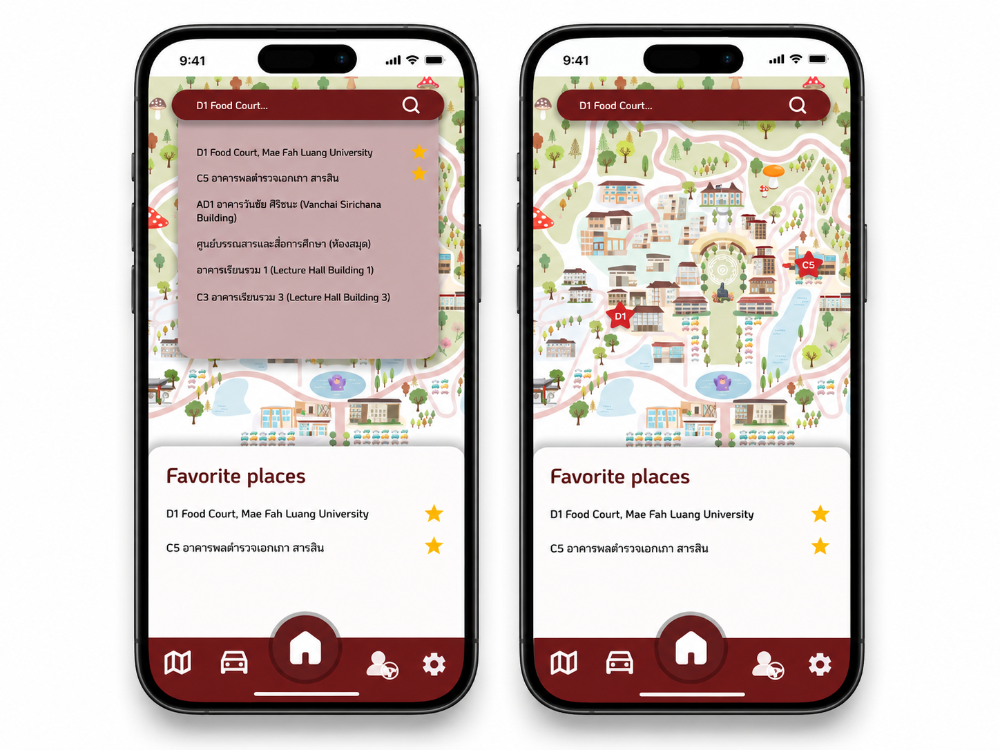
Exploring game systems, 3D environments, and interactive media fuels my creative versatility. These multi-disciplinary skills equip me to integrate gamification and dynamic interactions into user-centric products.
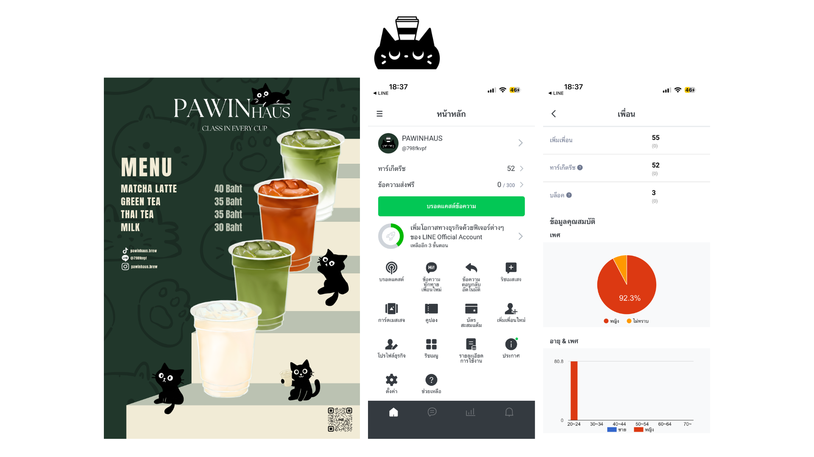
ROLE: Founder & Brand Designer
Driven by a personal passion for tea and coffee culture, I established PAWINHAUS a specialized campus beverage brand offering Thai Tea, Matcha, and Fresh Milk. For the visual identity, I designed a recognizable and approachable logo inspired by my own pet cat, establishing a memorable signature feline motif that resonates with the target audience.
To validate this entrepreneurial concept in a real-world market, I designed the end-to-end customer journey (Service Design). I utilized LINE Business (LINE Official Account) as the primary digital storefront for seamless order management and personally orchestrated the logistics for campus-wide delivery.
I conducted a thorough cost-revenue analysis which successfully proved the business model's profitability. Beyond financial metrics, managing PAWINHAUS provided deep insights into customer retention, revealing that operational consistency and reliable service are the true drivers for maintaining a loyal user base.
Building PAWINHAUS from scratch honed my ability to balance aesthetic branding with actual business constraints. Mapping the customer journey from a digital tap on the LINE app to the physical delivery of a drink sharpened my skills in Omni-channel Service Design.
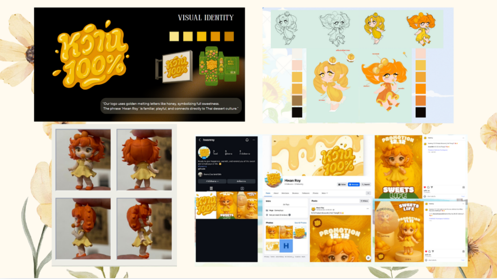
ROLE: Brand Manager & Creative Lead
Inspired by auspicious traditional Thai sweets (Thong Yip, Thong Yod, Foi Thong, and Dara Thong), this Art Toy collection features a signature gold color palette paired with intriguing backstories. The concept stems from a playful Thai phrase: "Am I feeling irritable today, or am I just low on sugar?" Designed to deliver "100% sweetness" and happiness, these characters stand out in the market with their unique cultural charm and emotional connection.
As the Brand Manager, I oversaw the entire product lifecycle and business strategy. My core responsibilities extended beyond character design to include:
Managing this physical product brand honed my entrepreneurial mindset. Conducting market research, defining user personas, and iterating based on real user feedback are the exact same principles I apply to creating user-centric digital products.
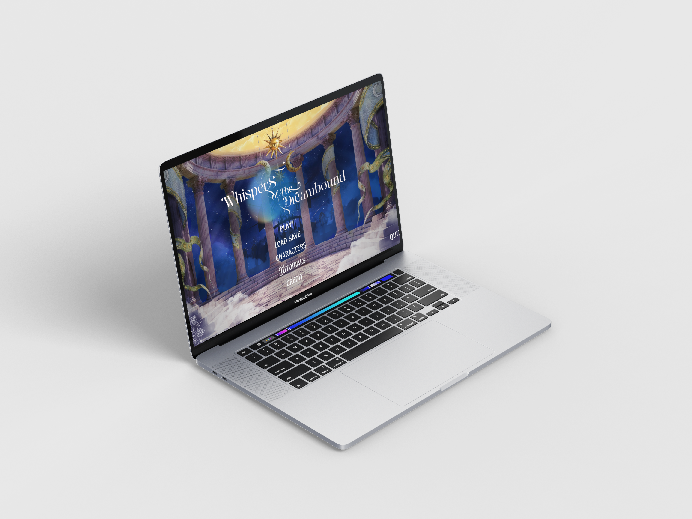
ROLE: UX/UI Designer and Game Designer
I created an adventure fantasy game, working as the UI designer and also as a game designer.
View Project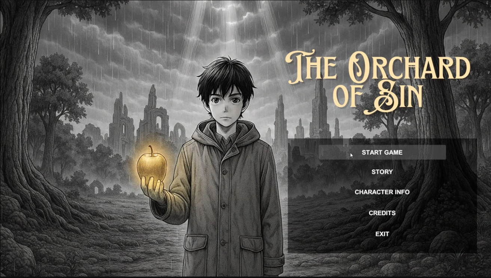
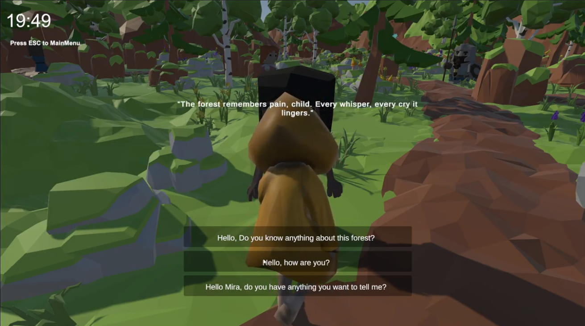
ROLE: Game Creator
I created a dark fantasy exploration mystery game, and it's my only project for game development, where I designed the story and all the in-game systems.
View Project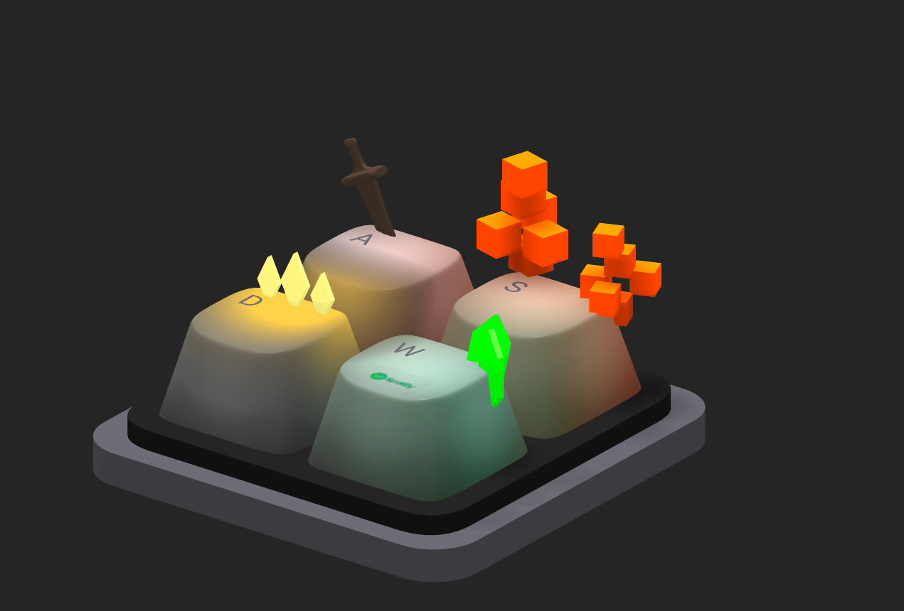
Learninghaus is an educational web-based platform designed to promote legal and ethical awareness in the use of Artificial Intelligence (AI). The platform aims to guide users in understanding how to utilize AI technologies responsibly, without violating copyright laws or infringing upon the rights of others.
View Project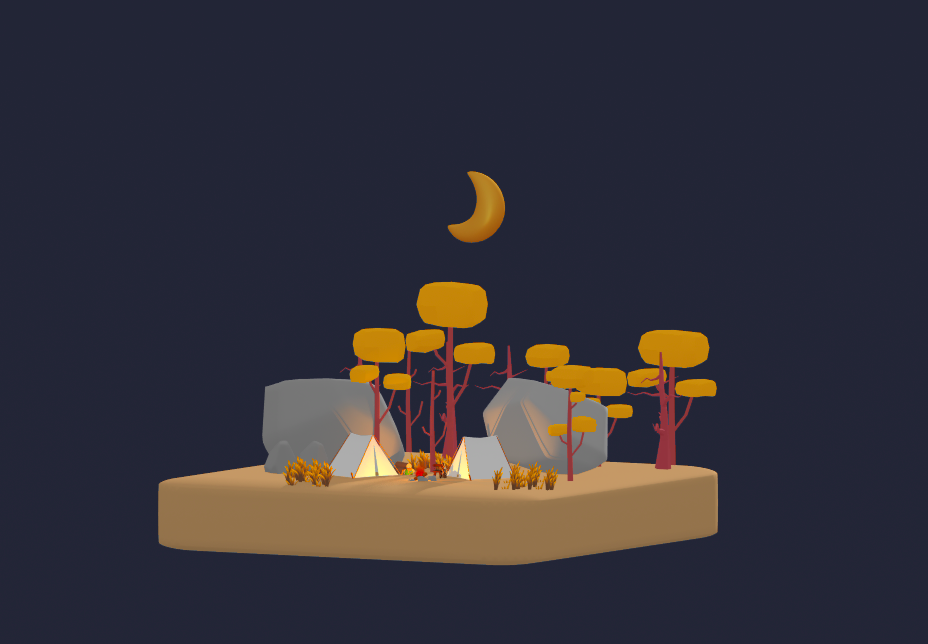
I used my imagination to create it and inspiration from the Sahara in Africa. The idea came from my fascination with its endless dunes, dramatic skies, and the peaceful solitude it offers. Pressing (Q) would toggle between night and day colors.
View Project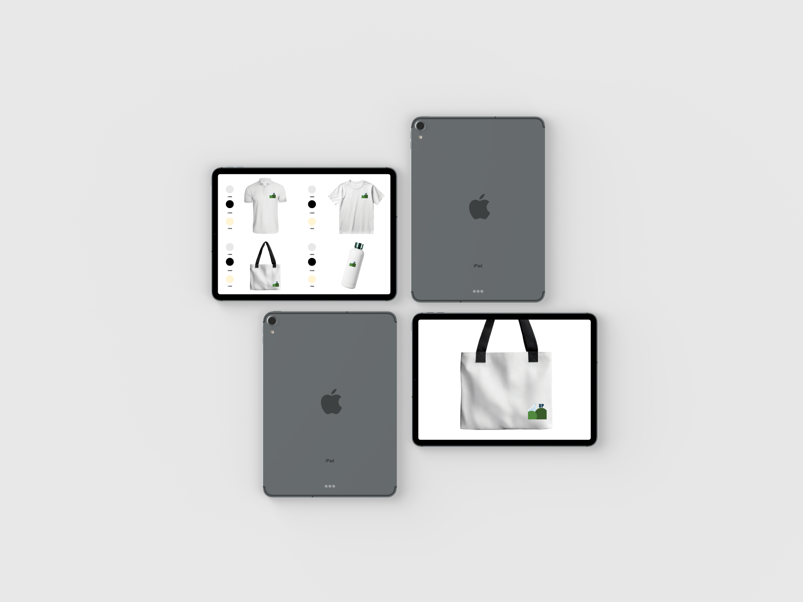
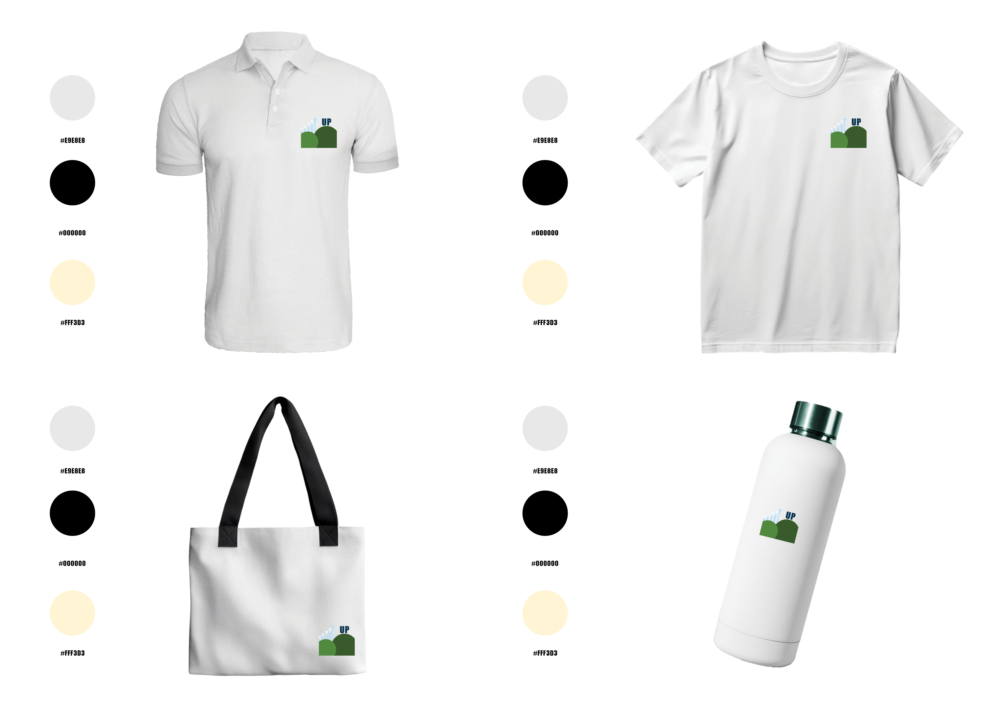
Participate in the design competition for a souvenir representing Maejo University's identity, under the theme "Maejo Up: Innovating for Tomorrow." The logo design concept incorporates mountains symbolizing stability, upward-pointing curves representing forward growth, and a gradient of color from dark to light to convey positive development.
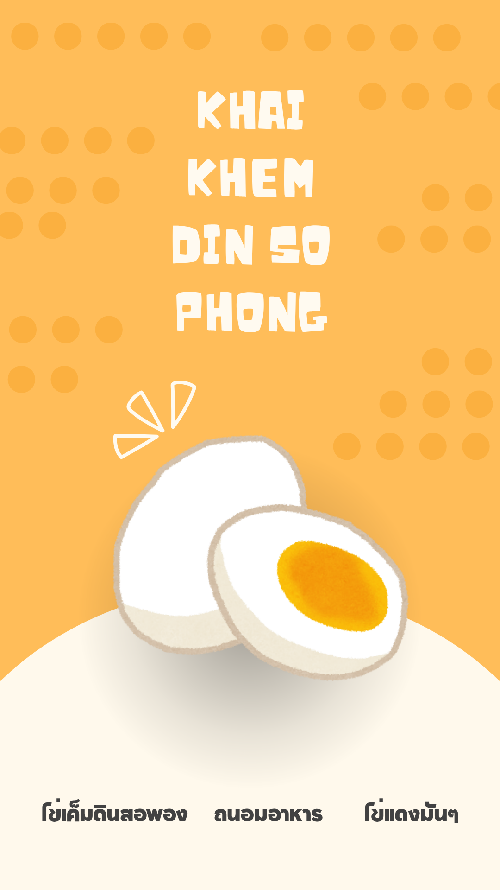
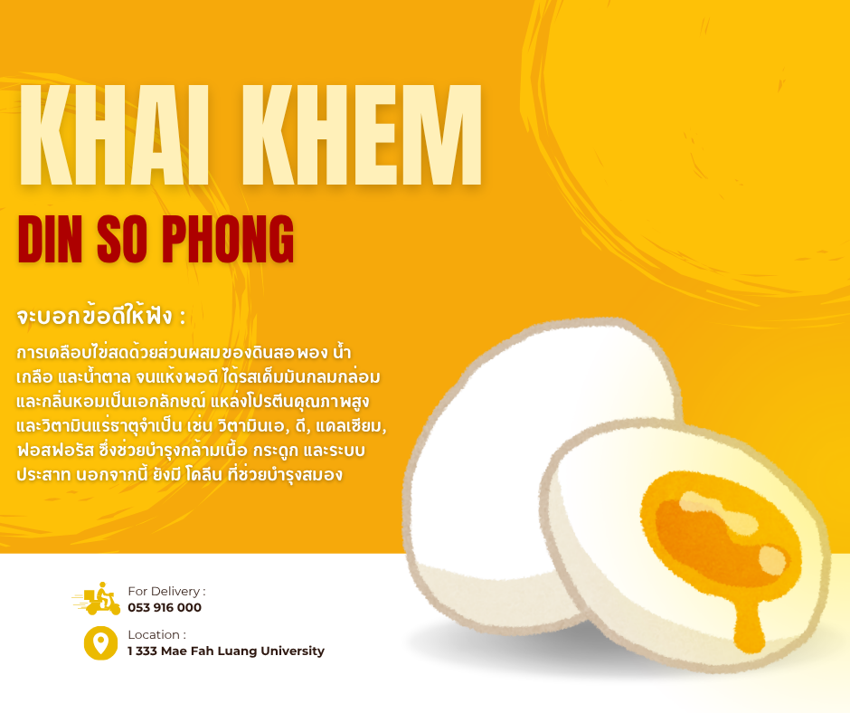
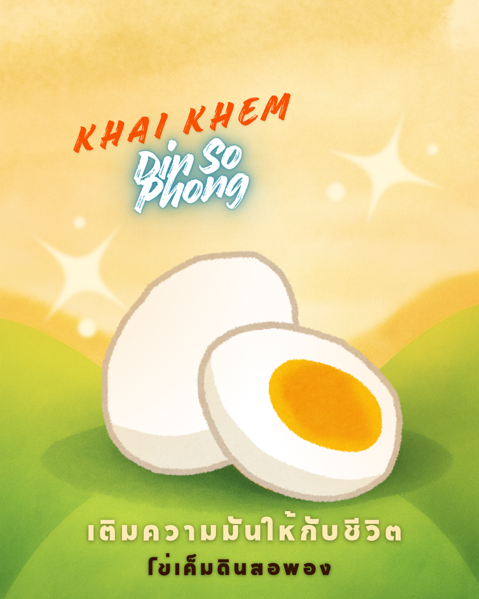
A conceptual ad campaign applying a full-funnel marketing strategy (TOFU, MOFU, BOFU). The design adapts visual communication to match specific user behaviors across different social platforms.
Vibrant colors and prominent product placement for immediate brand recognition.
Warm lighting and lifestyle aesthetics to create a natural, premium mood.
Clean, concise design optimized for fast-paced scrolling and quick visual appeal.
Adapting content for different platform algorithms sharpened my ability to design context-aware user interfaces that fit the user's environment.
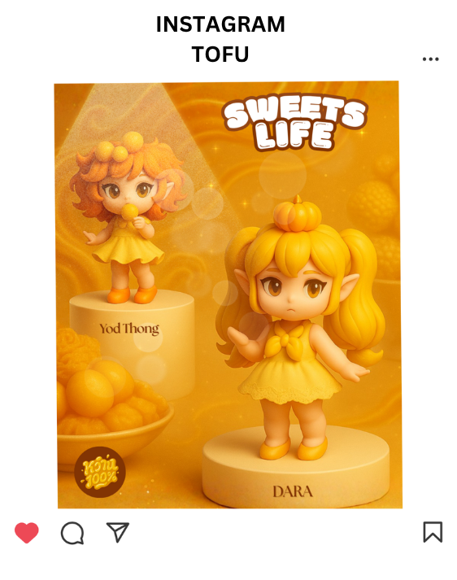
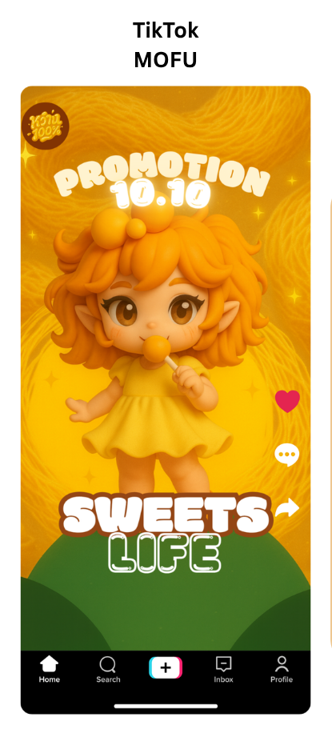
Combining storytelling with strategic visual design enhanced my understanding of visual hierarchy. This directly applies to product design by teaching me how to effectively guide user attention and craft a seamless user journey from initial awareness to final action.
A conceptual ad campaign featuring art toys inspired by traditional Thai desserts. This project demonstrates the application of a Marketing Funnel strategy by adapting visual communication and storytelling to suit different platforms and user intentions.
Designed to build brand awareness by introducing the characters "Dara" and "Yod Thong". The visual utilizes warm golden tones, 3D shading, and soft lighting to create a luxurious, collectible feel that reflects Thai cultural richness.
Focused on driving conversion through a "10.10 Promotion" theme. It highlights the main character using bright lighting and strong visual elements to encourage immediate purchase, while the gold and green color harmony symbolizes prosperity and freshness
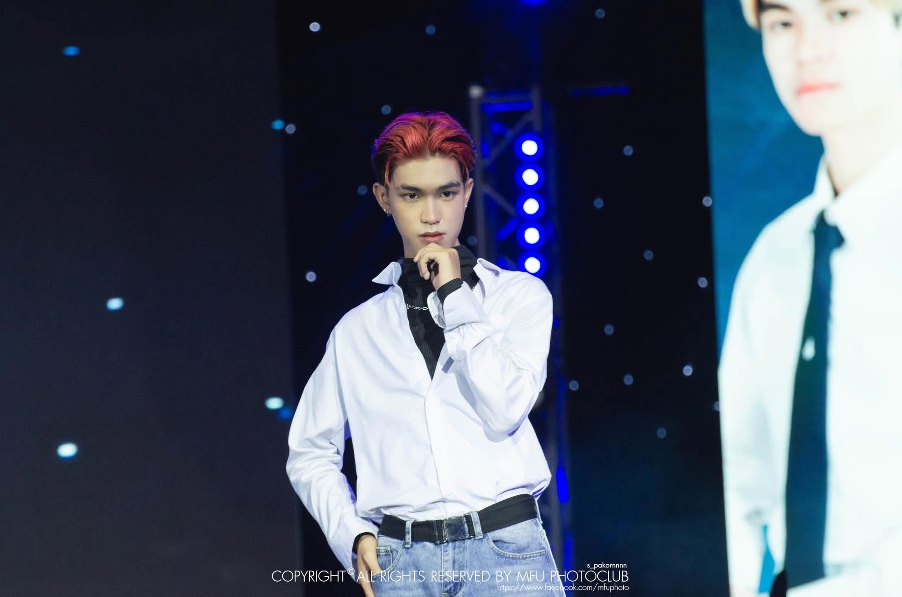
I participated in the MFU Ambassador 2023 competition as a representative of the School of Applied Digital Technology. This experience cultivated my leadership skills and empowered me to serve as an active voice advocating for the MFU student community.
ViewParticipated in a seminar and workshop to develop an entrepreneurial mindset and learn how to turn creative ideas into real-world businesses from industry experts. The highlight was a business simulation workshop where I practiced structured problem-solving. I went through the process of identifying "1 Core Problem," brainstorming "5 Potential Solutions," and critically selecting the "1 Best Solution" to build a viable business model. This experience significantly broadened my business perspective. It taught me that effective product design isn't just about aesthetics or usability; it's about solving real-world user problems while strongly aligning with business goals.
View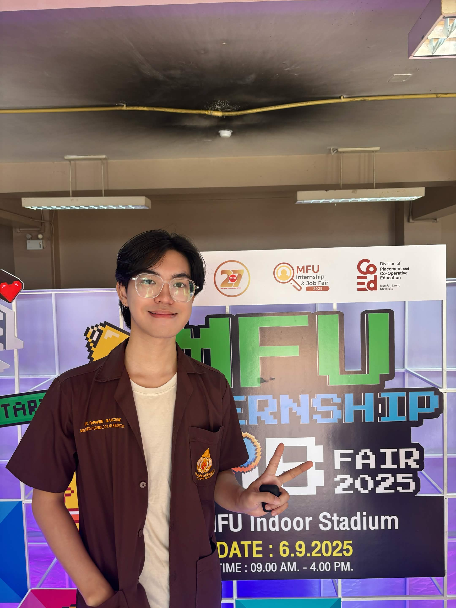
I participated in the MFU Internship & Job Fair 2025, a student readiness program, and am looking for the right career path for my future. The event allowed me to explore the industry landscape, identify companies offering roles that align with my skill set, and significantly broaden my perspective on potential career paths.
View